Installing Velociraptor in My Homelab
“Velociraptor is a unique, enterprise grade, open-source platform for endpoint monitoring, digital forensic and cyber response. Velociraptor covers the entirety of the attack life cycle, providing responders a powerful capability to address past, present and future events.”
Today I will be adding Velociraptor to my homelab which currently includes Sysmon and Wazuh. Sysmon and Wazuh provide an “always-on” detection platform that produces alerts based on certain activity occurring on the registered endpoints. Velociraptor answers point-in-time questions instead: what is true on that host right now.
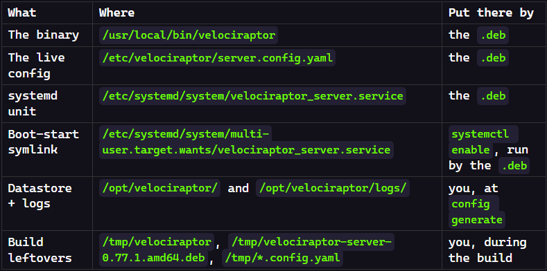
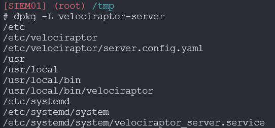
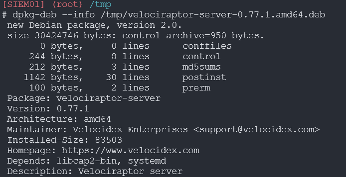
The service came up on the first try. By any reasonable measure I was done. Then I deleted all of it and built it again, because I could not have told you what half of it was actually doing. Following a sequence of commands and getting a working server is a different thing from understanding a working server.
1Step 1 — Stage the Binary on Local Disk
On my host Windows desktop, I ssh into my SIEM01 virtual machine first, and then run the following commands:
# Copy the downloaded binary from host machine to VM cp "/mnt/external/00 Setup/velociraptor-v0.77.1-linux-amd64" /tmp/velociraptor
# Mark the binary executable so Linux will run it chmod +x /tmp/velociraptor
# Confirm the binary runs and print its version /tmp/velociraptor version
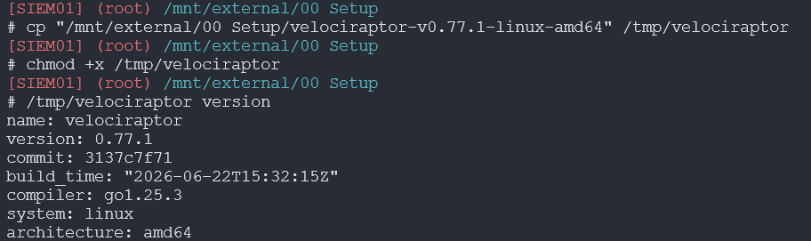
2Step 2 — Generate the Config
Launch Velociraptor’s interactive config generator:
# Launch the interactive config generator (writes the server config with an embedded private CA) /tmp/velociraptor config generate -i
Using the following options:
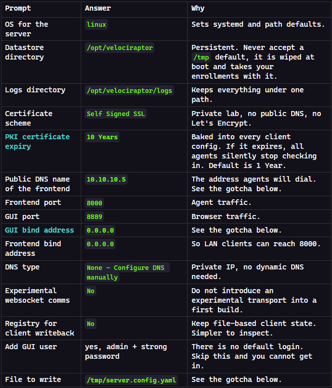
Two things bit me on version 0.77.1: the config generator tried to save a file containing private keys onto a network share, and it wrote localhost as the server address even though I typed the IP, which would have left every agent looking for the server on the wrong machine. Both are silent failures, so verify what actually got written instead of trusting what you typed.
3Step 3 — Derive the Client Config
This produces the settings file the agents will carry:
# Read the server config and write out the matching client config /tmp/velociraptor --config /tmp/server.config.yaml config client > /tmp/client.config.yaml
4Step 4 — Verify and Fix the Server URL
# Show the server_urls key and the line beneath it grep -A1 server_urls /tmp/client.config.yaml
# Replace every localhost reference with the real server IP in both configs sed -i 's/localhost/10.10.10.5/g' /tmp/server.config.yaml /tmp/client.config.yaml
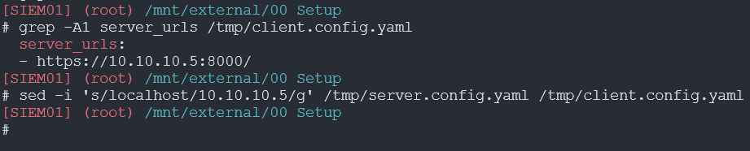
5Step 5 — Fix the GUI Bind Address
Now to make the web console reachable from the host desktop instead of only from the server itself:
# Show each bind_address with the port line beneath it so you can identify which section is which grep -n -A1 "bind_address" /tmp/server.config.yaml
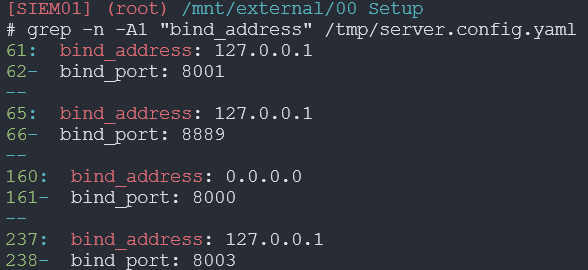
# Change only line 65 (the GUI, port 8889) to listen on all interfaces sed -i '65s/127.0.0.1/0.0.0.0/' /tmp/server.config.yaml
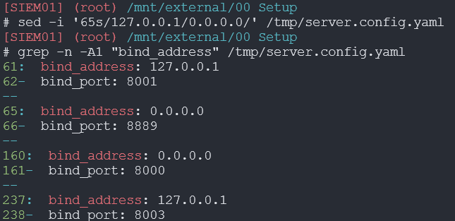
The more secure alternative (if not working in an isolated lab environment):
Leave the GUI on 127.0.0.1 and reach it through an ssh tunnel from your workstation with ssh -L 8889:127.0.0.1:8889 blue_admin@10.10.10.5, then browse https://127.0.0.1:8889. The console then never listens on the LAN at all. Use this posture anywhere less isolated than a homelab.
6Step 6 — Place and Lock the Configs
Move the config files out of temp and restrict read/write to root because server.config.yaml holds the CA private key, so anyone who reads it can impersonate your server.
# Create the datastore and logs directories, move both configs in, then restrict the server config to root only mkdir -p /opt/velociraptor/logs && mv /tmp/server.config.yaml /tmp/client.config.yaml /opt/velociraptor/ && chmod 600 /opt/velociraptor/server.config.yaml
7Step 7 — Build the Service Package
Take the Velociraptor binary and use debian server to turn it into a proper Ubuntu installer. Worth reading before you let it register a service: the postinst creates a dedicated account that cannot log in, locks the config to root, and grants the binary only the specific privileges it needs rather than running as root.
# Change to /tmp, then build a .deb for the server role from the config (the .deb is written to /tmp) cd /tmp && /tmp/velociraptor --config /opt/velociraptor/server.config.yaml debian server # Extract the package control files so you can read the install scripts dpkg-deb --control /tmp/velociraptor-server-0.77.1.amd64.deb /tmp/ctrl # Read the postinst script to see exactly what happens at install time cat /tmp/ctrl/postinst
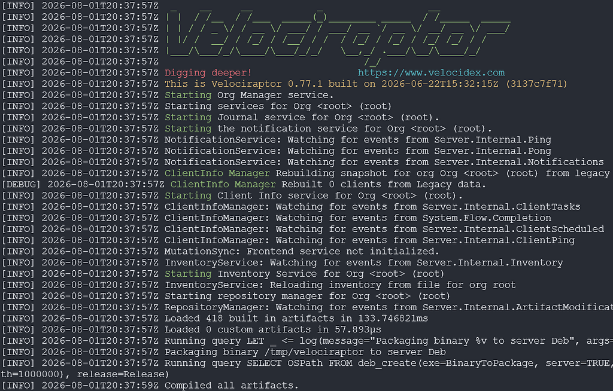
# List the built package so you can see its exact filename ls -l /tmp/*.deb
8Step 8 — Install
# Install the package, which places the binary and config, registers the systemd unit, and enables boot start dpkg -i /tmp/velociraptor-server-0.77.1.amd64.deb
9Step 9 — Verify
# Confirm the service is active and running systemctl status velociraptor_server --no-pager # Confirm the GUI is now on 0.0.0.0:8889 and the frontend on *:8000 ss -tlnp | grep -E '8000|8889'
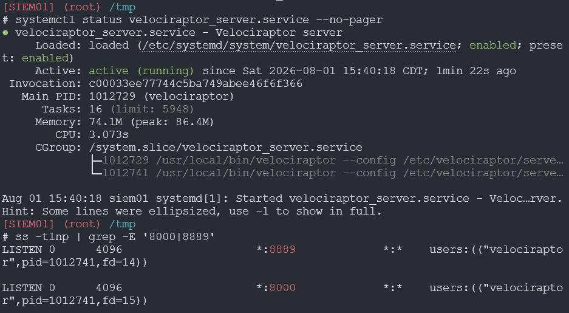
# Allow the frontend port (only if ufw is active) ufw allow 8000/tcp # Allow the GUI port (only if ufw is active) ufw allow 8889/tcp # From SIEM01, confirm the GUI answers over HTTPS (-k accepts the self-signed certificate) curl -k -I https://10.10.10.5:8889
Then browse https://10.10.10.5:8889 from host desktop, accept the self-signed warning, and log in with the admin account created during setup:
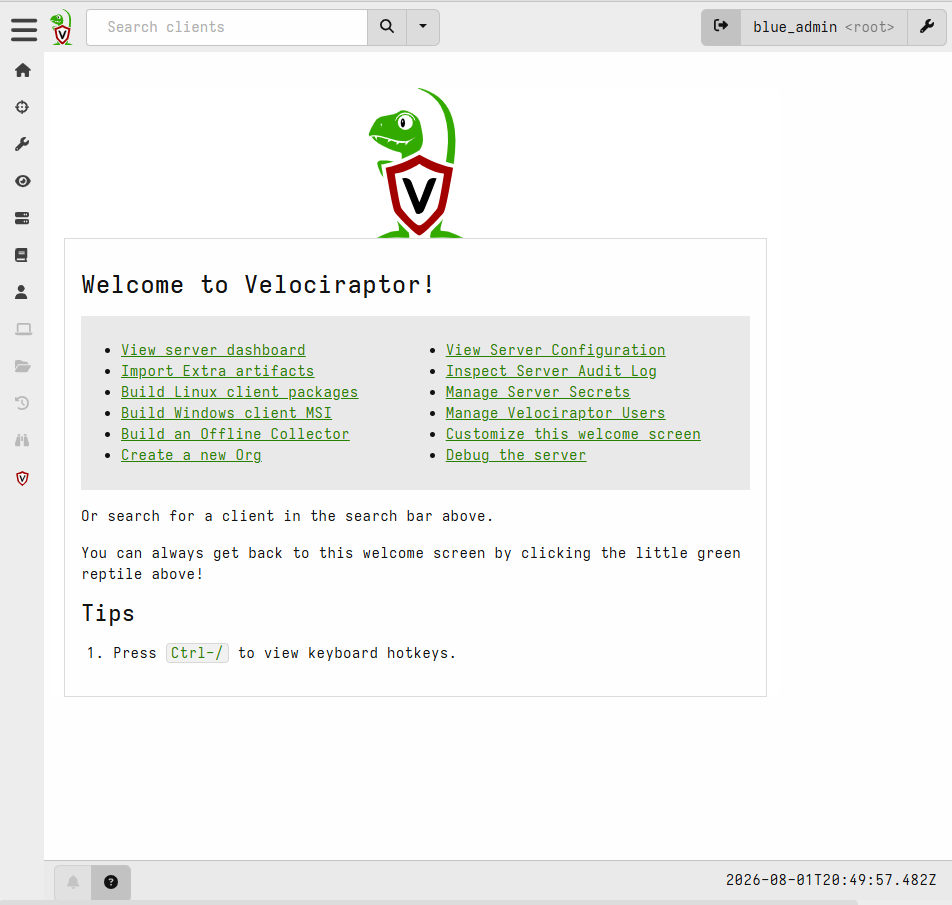
10Step 10 — Enrolling a Client Endpoint
The 2TB drive is physically attached to my Windows host and published as an SMB share. Both VMs reach the same disk from opposite sides: the Ubuntu SIEM box has it CIFS-mounted at /mnt/external, and the Windows endpoint reaches it over UNC at \\10.10.10.10\External.
# Copy the client config onto the shared drive cp /opt/velociraptor/client.config.yaml "/mnt/external/00 Setup/"
Now using my Windows 11 endpoint named WS01, create the working directory, copy the config file from SIEM01 along with the Velociraptor executable I downloaded from the official website. Note the IP rather than a hostname. The host is not domain-joined, so the lab’s DNS has no record for it, and \\CORP\External fails from the VMs even though Explorer happily shows the share under Network. Explorer finds it by broadcast discovery; the command line resolves through DNS and comes up empty. That mismatch looks like a permissions problem and is not one.
# Create the directory to store the config files New-Item -ItemType Directory -Path "C:\Program Files\Velociraptor" -Force # Copy the binary executable Copy-Item "\\10.10.10.10\External\00 Setup\velociraptor-v0.77.1-windows-amd64.exe" "C:\Program Files\Velociraptor\velociraptor.exe" # Copy the client config next to the binary Copy-Item "\\10.10.10.10\External\00 Setup\client.config.yaml" "C:\Program Files\Velociraptor\client.config.yaml" # Confirm the binary runs and prints its version & "C:\Program Files\Velociraptor\velociraptor.exe" version
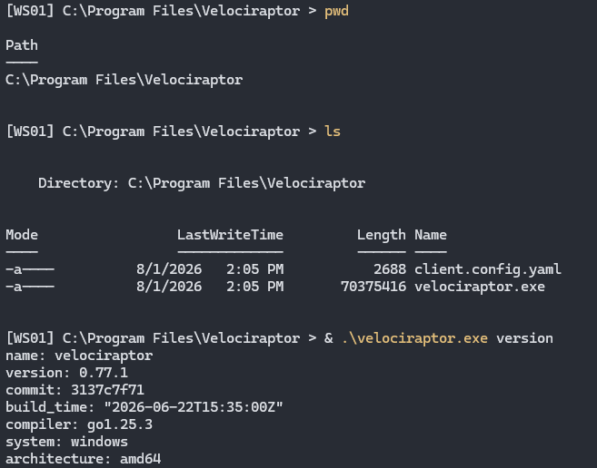
Before installing the service, run it as a foreground process to see the agent enrollment succeed:
# Run the agent in the foreground with verbose logging so you can watch it enroll before committing it as a service & "C:\Program Files\Velociraptor\velociraptor.exe" --config "C:\Program Files\Velociraptor\client.config.yaml" client -v
Enrollment was successful, no errors. Ctrl+C the foreground process and install as a service:
# Register the agent as a Windows service so it runs continuously and starts on boot & "C:\Program Files\Velociraptor\velociraptor.exe" --config "C:\Program Files\Velociraptor\client.config.yaml" service install # Confirm the service is registered and running Get-Service Velociraptor
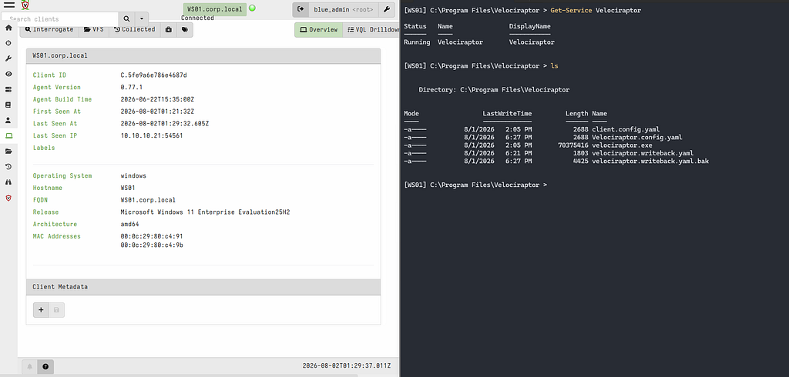
Service is running on the endpoint, endpoint is visible in the GUI.
The process tracker is a running notebook on the client endpoint that writes down every process birth and death as it happens, so you can walk the family tree backward afterward. Windows does not keep this by default: once a process exits, the record of what launched it is gone.
The constraint that matters is that the tracker only records forward from the moment it starts. It is a security camera, not a time machine. If you fire an attack simulation before enabling it, the lineage query comes back empty and it looks like the tool is broken, when really it just never saw those processes get born. Enable it, confirm it is recording, and only then run anything you intend to trace.
To enable it, add Windows.Events.TrackProcesses to the Client Events monitoring table:
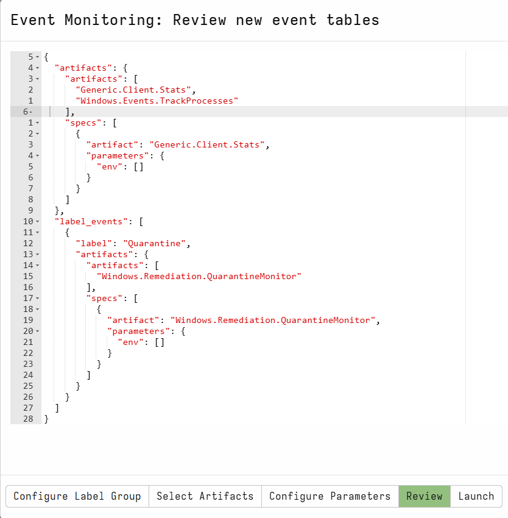
Velociraptor running alongside Wazuh, showing the same endpoint:
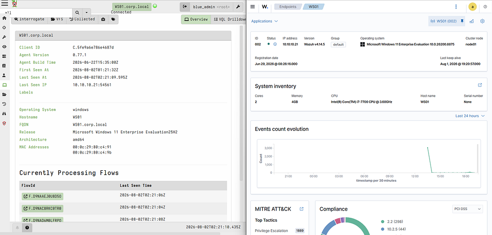
Velociraptor is now running alongside Wazuh, watching the same endpoint from a different angle. Wazuh tells me something fired; Velociraptor lets me ask what was actually true on that machine at that moment. Next I’ll use it to answer the question Wazuh structurally cannot: whether the process claiming to be AnyDesk really is.
Rules and reproduction steps: github.com/purplepyram1d/rmm-multiplicity